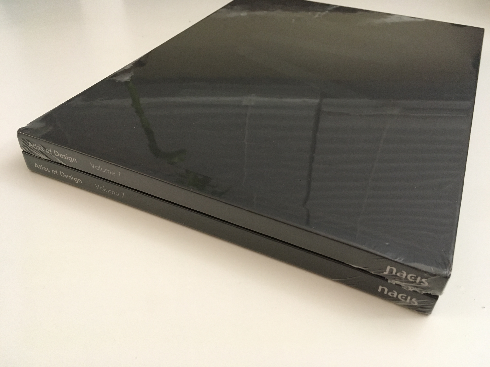
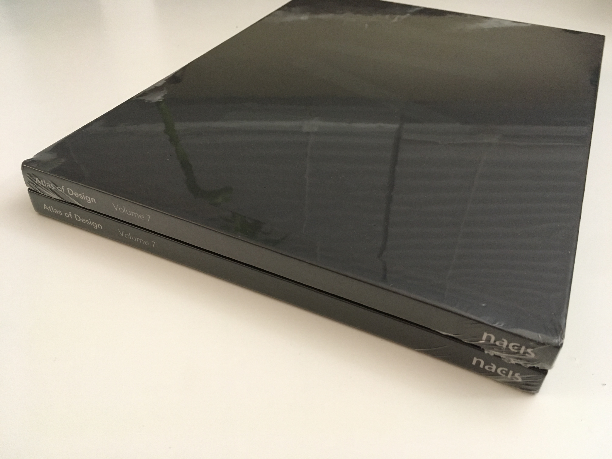
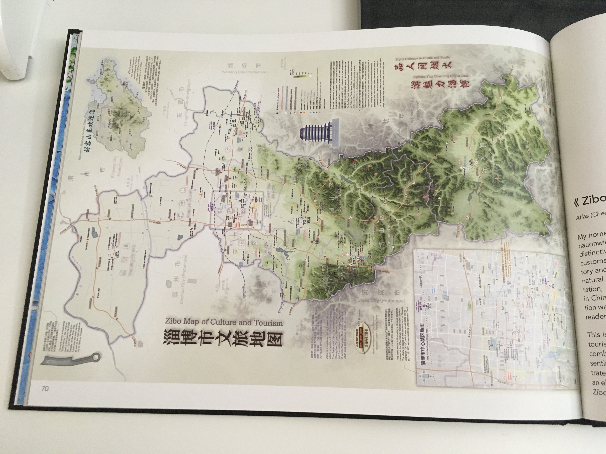
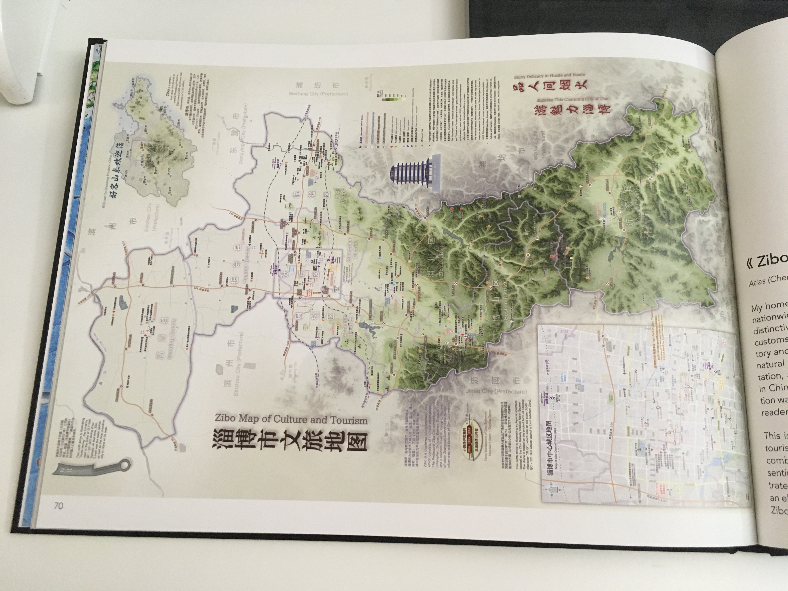
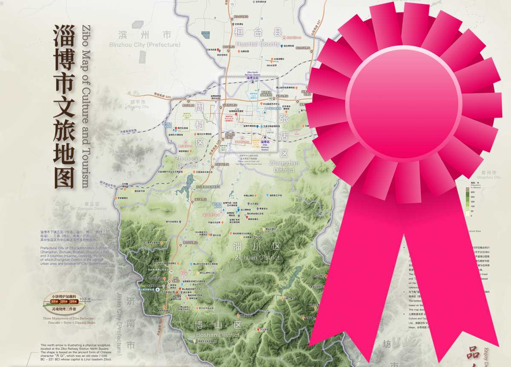
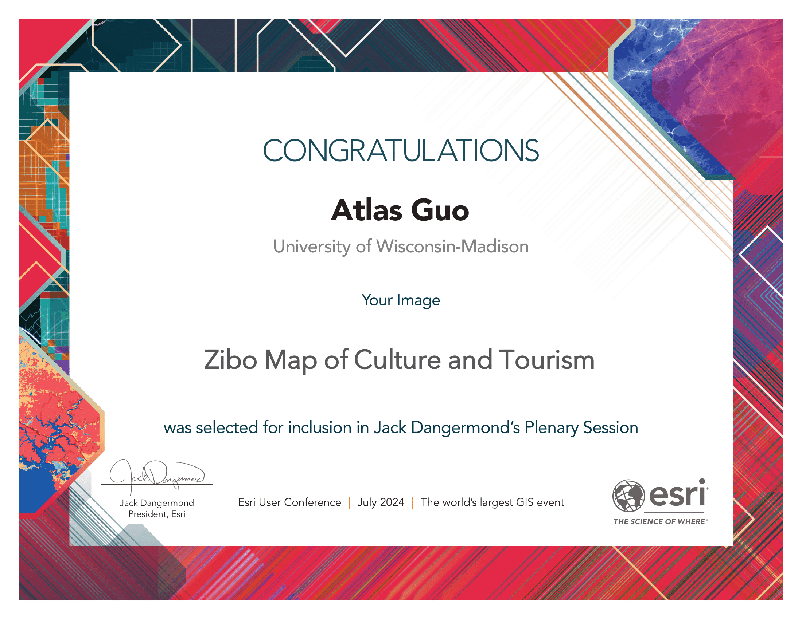
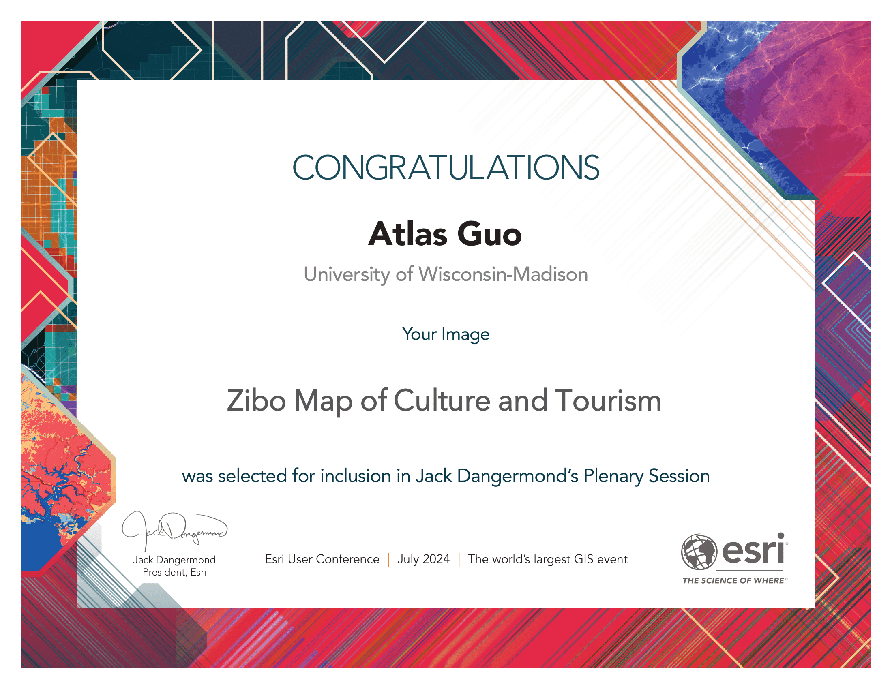

Zibo Map of Culture and Tourism
淄博市文旅地图
Best Cartographic Design in
2023 NACIS Map Competition;
Atlas of Design Vol.7; Esri Map Book Vol. 40; Esri
UC Plenary Session and Cartography
SIG Excellence
Award
北美地图信息协会2023地图竞赛最佳地图设计奖，易智瑞用户大会地图学特别兴趣组卓越奖与全员大会优秀地图展示，入选双年刊《设计地图集（第七卷）》与易智瑞《地图之书（第40卷）》
如果您是从中国大陆访问本网页，加载速度可能较慢，欢迎点击下方链接跳转至“哔哩哔哩”视频（1. 地图一览、 2. 威斯康星大学图书馆、 3. 纽约时代广场）以及中文媒体的相关报道：鲁中晨报、 淄博日报/晚报（转载至腾讯新闻）。如需查看本页面中的图片，请耐心等待加载或重新打开本页面。
 Download Compressed Image
Download Compressed Image下载压缩图片
Download Full-Size Image
下载高清图片
The following English paragraphs are the original introduction published in The
Atlas
of
Design, Volume VII. It was subsequently translated into Chinese.
以下英文段落为刊登在北美地图信息学会双年刊《设计地图集（第七卷）》上的地图介绍原文。随后被翻译成中文，以便中文读者阅读。
My homeland, the City of Zibo in China, became a nationwide hot spot in the spring of
2023 due to its distinctive barbecue cuisine and honest, simple folk customs. To
help promote tourism, I designed this map to introduce the history and culture of
this beautiful city, showcasing its natural features, tourist attractions, public
transportation, and some fun facts. The initial version was created in Chinese; in
subsequent revisions, some information was translated into English to serve
international
readers.
我的家乡——中国的淄博市，于2023年春天因其独特的烧烤文化和淳朴真诚的民风而成为全国的热点。为了助力旅游推广，我设计了这幅地图，介绍这座美丽城市的历史与文化，展示其自然特征、旅游景点、公共交通网络及一些有趣的细节。初版地图以中文制作，后续版本中将部分信息翻译成英文，以便非中文读者阅读。
This map is a reference map enriching with cultural and tourism information. The
topographic base map combines hillshades and stratified colors, presenting the
natural landscape’s beauty. It clearly illustrates the topographic characteristics,
with higher elevation in the south and lower in the north, setting an elegant visual
tone for terrain representation, with Zibo's major peaks and some suburban hills
labeled.
这是一幅结合大量文化与旅游信息的参考地图。地形底图结合了山体阴影渲染和分层设色，展现出自然景观的美感。地图清晰地展示了地形特征，南高北低的地势走向为地貌表现奠定了优雅的视觉基调，同时也标注了淄博主要的山峰及一些郊区的山丘。
In terms of symbol design, important tourism and transportation information is
prioritized. This includes transportation hubs (railway stations, transit centers,
airport shuttle hubs, highway toll gates, and service areas), transportation lines
(high-speed railway and highway networks), and city bus "Barbecue Lines" and
"Tourism Lines" specially designed in metro transit style. The map categorizes
tourist attractions into different levels and types, such as museums, historic
sites, and other popular
spots.
在符号设计上，本图优先突出重要的旅游与交通信息，包括交通枢纽（高铁站、客运中心、城市候机楼、高速公路收费站及服务区）、交通线路（高铁及高速公路网）以及城市公交的“烧烤专线”和“旅游专线”，均采用地铁图的风格进行设计。地图还将旅游景点按照级别和类型进行了分类，如博物馆、文物保护单位和其他热门景点。
This map includes two insets: The top right corner features a locator map of
Shandong Province, showing the administrative boundaries of prefecture-level cities
and essential physical geography. The bottom left corner shows a map of downtown
Zibo, marking the main roads, business districts, featured barbecue restaurants, and
a fun fact in local
toponymy.
地图包含两个插图：右上角为淄博市在山东省的位置示意图，展示了省内地级市的行政区划及基本自然地理信息；左下角为淄博市城区地图，标注了主要道路、商业区、特色烧烤店以及与地名相关的趣味信息。
This map subtly integrates historical and cultural elements into its graphic design,
such as barbecue kebabs combined with the map scales, ancient knife-shape money and
a symbolic sculpture in railway station plaza as the north arrows, revealing Zibo’s
rich history as the capital city of Qi State (1046 - 221 B.C.), one of the most
populated Chinese cities at that time. The design of the landmark Haidai Tower,
featuring “Zhongshuge”, known as the most beautiful bookstore in China, is specially
showcased.
这幅地图在设计中巧妙融入了历史和文化元素。例如，将烧烤串设计为比例尺，将齐国刀币和火车站北广场的标志性“齐”字雕塑设计为指北针，体现了淄博作为齐国（公元前1046年至公元前221年）都城的深厚历史底蕴。当时淄博（临淄）是中国最繁华的中心城市之一。地图还特别展示了标志性建筑海岱楼以及其中的“钟书阁”，后者被誉为中国最美书店。
As a native of Zibo, this map holds great significance to me. I literally cannot
make any other map with the same level of confidence, as it is tied to countless
personal memories. During the data collection process, I was so amazed by the rapid
and substantial development of my hometown in terms of infrastructure and
attractions. With deep love and passion, I respectfully present my map as a gift to
this lovely land,
Zibo.
作为一名淄博人，这幅地图对我而言意义非凡。我几乎无法用同样的信心去制作其他任何一幅地图，因为它与我的个人记忆紧密相连。在收集数据的过程中，我深刻感受到家乡在基础设施和旅游景点上的快速发展和巨大变化。怀着深深的热爱和激情，我满怀敬意地将这幅地图献给这片可爱的土地——淄博。
See an example of represented terrain below.
下图是地形表达（山体阴影渲染加分层设色）的局部样例。

Below is the inset map of Zibo Central Urban Area (Zhangdian District), with minor
revisions to generally work as an independent map as well.
下图为淄博市中心城区（张店区）的附图，在原图基础上有微小调整，以便单独展示。
下载压缩图片（张店）
Download Full-Size Image
下载高清图片（张店）
Below is the inset map of Shandong Province, with minor
revisions to generally work as an independent map as
well.
下图为淄博市在山东省内位置示意的附图，在原图基础上有微小调整，以便单独展示。
下载压缩图片（山东）
Download Full-Size Image
下载高清图片（山东）
I presented this map during the 2023 annual conference of North American Cartographic
Information Society (NACIS), and won the Best
Cartographic Design Award (tie) in Student Map and Poster
Competition.
下图为本地图（第一版）在2023年北美地图信息协会年会上展出时的照片。该图在学生地图海报比赛中荣获最佳地图学设计奖（并列第一，奖金500美元）。

 This map is also selected into the Atlas
of Design, Volume VII, published by the North American Cartographic
Information
Society (NACIS).
This map is also selected into the Atlas
of Design, Volume VII, published by the North American Cartographic
Information
Society (NACIS).
本地图于2024年4月被收入北美地图信息协会双年刊《设计地图集（第七卷）》，以下为宣传图和实体书照片。
 

 


And as the Honorable Mention artwork in UW-Madison 15th Annual Digital Salon, the large printed version of this map is displayed at the College Library of UW-Madison. 本地图于2024年4月荣获威斯康星大学麦迪逊分校第15届数字沙龙最佳作品荣誉提名奖（即并列第二名），并在学校的“大学图书馆”进行为期一年的展出（2024年4月-2025年4月）。

Zibo's barbecue became a phenomenal hot spot in China during the spring of 2023. To
better advertize
Zibo for the May Day (Labor Day Holiday) in 2024, my Zibo Map of Culture and Tourism
was
featured on two local public media platforms: Zibo Luzhong Morning Post (Dazhong News Group) 大众报业-鲁中晨报,
and Zibo
Daily
Newspaper 淄博日报社, reprint by Tencent
News 腾讯新闻. The WeChat Channel video clip by Zibo Daily Newspaper got
over 1000 "Like", 400 "Repost", and 600 "Favorite".
I made some short video clips introducing this Zibo map, and
posted on several social media
platforms (mostly on WeChat Video Channel), and got about 12K views so far. To
better promote the tourism, the featuring video is displayed on the giant screen at
Times Square at
NYC.
淄博烧烤在2023年春天成为了中国现象级的热点。为了更好地宣传淄博、迎接2024年五一劳动节假期，我的《淄博市文旅地图》的介绍被刊登在两个本地大众媒体平台上：大众报业集团旗下的《鲁中晨报》以及《淄博日报》，并被腾讯新闻转载。《淄博日报》制作的微信视频号短视频获得了超过1000次“点赞”、400次“转发”和600次“收藏”。我还制作了一些其他的短视频来介绍这张地图，并发布在多个社交媒体平台（微信视频号、哔哩哔哩、抖音等）上，目前累计播放量超过1.4万次。为了更好地推广旅游业，这段宣传视频还被投稿至纽约时代广场的巨型屏幕上播放。
During Esri User Conference in July 2024, this map was selected by Esri's President
Jack Dangermond to be featured during the Plenary Session.
本图于2024年7月入选易智瑞用户大会的全员大会主题演讲中的优秀地图展示（由易智瑞公司创始人兼总裁 Jack Dangermond
杰克·丹杰蒙德先生亲自评审）。易智瑞公司（Esri）是全球最大的GIS企业和地理信息服务提供商，其用户大会也是全球最大的GIS盛会。本次大会在加州的圣地亚哥市举行，来自世界各地的现场参会者超过2.1万人。大会的亮点之一即为创始人兼总裁丹杰蒙德先生主持的全员大会主题演讲。


 
This map also won the Cartography Special Interest Group Excellent Award during
the
Esri User Conference 2024.

This map also won the Cartography Special Interest Group Excellent Award during
the
Esri User Conference 2024.
本图在该次易智瑞用户大会上同时获得了地图学专家兴趣组卓越奖。


This map is also selected to be published on the next volume (Vol.40) of Esri Map
Book, in 2025.
本地图被收入易智瑞《地图之书（第40卷）》，并将于2025年夏天正式出版，敬请关注。
At the end of 2024, the Zhoucun Ancient Commercial Street was officially
designated as a national 5A-level tourist attraction, becoming Zibo's first 5A-level
scenic spot. This map has been updated accordingly, with the addition of an icon of
it.
2024年底，淄博的周村古商城正式入选国家5级景区，成为淄博的首家5A级景区。本地图也进行了相应更新，并增绘周村大街的图标。